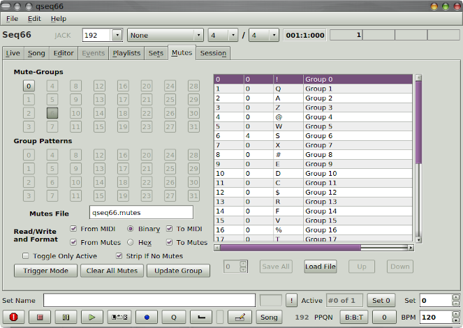

-
Mute group storage.
Mute groups can be of the song, and can be stored in
the
.midi file.
They are stored in a sequencer-specific (SeqSpec)
section of the song, and so are not available to other
sequencers.
Mute groups can also be reused by storing them in a
.mutes configuration file.
-
Number of mute groups.
Currently, up to 32 mute groups can be defined.
Mute groups are numbered from 0 to 31.
This is about the maximum useful number,
since most of the other keys on the computer keyboard
have functions allocated to them.
-
Mute group features.
Each mute group has a number, a hot-key,
and a name.
Currently the names are hardwired and simple:
"Group 0", etc.
In addition to a hot-key, a MIDI control can
be assigned to mute groups in the
.ctrl file.
-
Group grid.
In the Mutes tab, the top grid shows the 32 places for
the mute groups.
-
Group pattern grid.
In the Mutes tab, the bottom grid shows the patterns
that are enabled/disabled in the currently-selected
mute group.
|
-
Tricky.
The sets tab is a bit tricky to use, and
probably needs some more testing.
Report bugs!
|
|

|
| Mutes Tab |
|